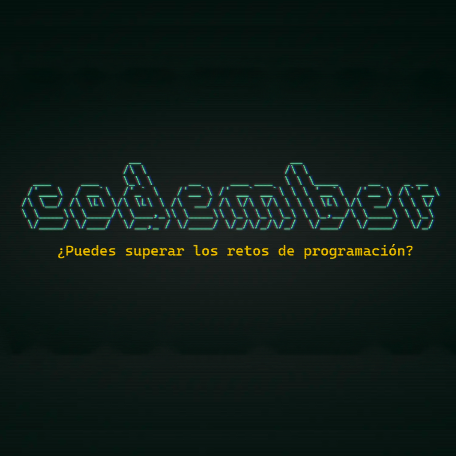

Codember

.

W3School es un sitio web para aprender tecnologías web en línea, contiene tutoriales de HTML, Python, CSS, JavaScript, SQL, PHP, XML y otras tecnologías. Muy útil para todos aquellos que quieran aprender lenguajes de programación. el contenido viene desglosado en apartados, cuenta con ejemplos y ejercicios.
#Programacion
Revista de tecnología que cuenta con un canal de YouTube en el que encontrarás todos los análisis, unboxings, trucos y videotutoriales que publicamos a diario en nuestra web. Todo sobre tecnología, smartphones, tablets, ordenadores, Mac, Android, iOS, estilo de vida y wearables. Las mejores reviews para estar al día en el mundo tecnológico.
#Otros
Hack Forums es un foro de Internet similar a Reddit dedicado a debates relacionados con la cultura hacker y la seguridad informática.
#Seguridad
Sitio web del canal de YouTube Naseros, en su sitio web podrás encontrar numerosos artículos relacionados con el mundo de la informática, principalmente sobre redes, Routers, Wi-Fi, NAS, discos y almacenamiento entre otras cosas.
#Redes
Ccnadesdecero es un sitio web que proporciona cursos gratuitos y de pago para prepararse las certificaciones cisco.
#Redes
Wuolah es una plataforma de apuntes en las que puedes subir tus propios apuntes recibiendo una pequeña cantidad por cada descarga y acceder a los apuntes subidos por otras personas de forma gratuita. Mi recomendación es buscar apuntes de SMR, DAW, DAM, ASIR e Ingeniería informática, de esta forma podréis acceder a apuntes, ejercicios, exámenes, preguntas frecuentes, etc. Lo que la hace una plataforma ideal para obtener conocimiento de forma gratuita.
#Otros

Hack the Box es una plataforma online. En la que hay una red de máquinas listas para ser vulneradas y para que practiques tus habilidades de ciberseguridad, de forma totalmente legal. ¿El objetivo? Conseguir ser root para demostrar que eres el mejor. Las máquinas intentan simular en mayor o menor medida a un servidor real, con páginas web, servicios de administración como ssh o telnet, descarga y subida de ficheros a través de ftp, servidores de dominio Windows… Y para poder conseguir ser root tendrás que usar técnicas de escalación de privilegios, esteganografía, fuerza bruta, exploits, análisis de código… Si no sabes ni por dónde empezar, te recomiendo los canales de YouTube de IppSec, S4vitar, Contando bits y el pingüino de Mario, donde encontrarás las soluciones de las máquinas retiradas que solo están disponibles para los usuarios con acceso VIP (aprox. 12 euros/mes).
#Seguridad
Try hack me, al igual que Hack the box es una plataforma online con multitud de maquinas vulnerables para poder entrenar tus capacidades y conocimientos en ciberseguridad.
#Seguridad
Over the wire es una Plataforma la cual tiene wargames, los wargames son una serie de desafíos con el fin de aprender hacking ético, Wargames está dividido por categorías siendo Bandit la mas fácil, en la que encontraremos retos en los que debemos conectarnos a una maquina con el protocolo ssh y el usuario que indicado y deberemos ir encontrando las flags para avanzar al siguiente nivel, las flags son las contraseñas del siguiente usuario al que debemos acceder, y progresivamente ira siendo más complicado hacerse con ellas. Requiere un mínimo conocimiento de sistemas Linux y redes
#Seguridad

Typings al igual que el juego anterior es un juego de navegador, de mecanografía, en este debemos escribir el texto lo más rápido posible sin equivocarnos, podemos seleccionar el número de palabras para elegir la dificultad, además nos mostrara el numero de palabras por minuto y errores que hemos tenido
#Programacion
#Otros
#Otros
.
.
.